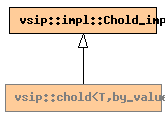

Global Namespace
Inheritance Tree
Inheritance Graph
Name Index
template <
typename
T>
class
vsip
::chold<T,by_value>
File:
../../../vsip/core/solver/cholesky.hpp
Primary template:
chold

-
Public Member function templates
template <
typename
Block0>
Matrix
<T>
solve
(
const_Matrix
<T, Block0>
b
)
-
Public Member functions
constructor
chold
(
mat_uplo
uplo
,
length_type
length
)
destructor
~chold
()
-
Private Typedefs
impl::Chold_impl
base_type
Generated on Wed Sep 30 14:28:12 2009 by
synopsis
(version 0.12)
 synopsis
synopsis